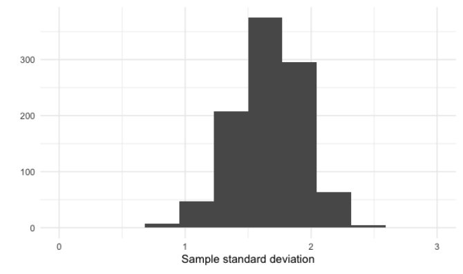

pnorm(154, mean = 161, sd = 7)[1] 0.1586553Es hora de explorar una de las distribuciones de probabilidad más importantes en estadística, la distribución normal. Creará un histogramas para trazar distribuciones normales y comprenderá el teorema del límite central, antes de ampliar su conocimiento de las funciones estadísticas agregando las distribuciones Poisson , exponencial y t a su repertorio.
La siguiente distribución de probabilidad que discutiremos es la distribución normal. Es una de las distribuciones de probabilidad más importantes que aprenderá, ya que innumerables métodos estadísticos se basan en ella y se aplica a más situaciones del mundo real que las distribuciones que hemos cubierto hasta ahora.
La distribución normal se ve así.
Su forma se conoce comúnmente como curva de campana. La distribución normal tiene algunas propiedades importantes.
Primero, es simétrica, por lo que el lado izquierdo es una imagen especular del lado derecho.
Segundo, como cualquier distribución continua, el área bajo la curva es 1.
En tercer lugar, la probabilidad nunca llega a 0, incluso si lo parece en los extremos de la cola. Solo el 0.006% de su área está contenida más alla de los bordes de este gráfico.
La distribución normal se describe por su media y desviación estándar. Aquí hay una distribución normal con una media de 20 y una desviación estándar de 3
Aquí hay una distribución normal con una media de 0 y una desviación estandar de 1.
Cuando una distribución normal tiene una media de 0 y una desviación estándar de 1, es una distribución especial llamada distribución normal estándar. Observe cómo ambas distribuciones tienen la misma forma
pero sus hachas tienen diferentes escalas.
Para la distribución normal, el 68% del área está dentro de 1 desviación estándar de la media.
95% del área cae dentro de 2 desviaciones estándar de la media
Y dl 99.7% del área cae dentro de tres desviaciones estándar. Esto a veces se llama la regla del 68%-95%-99.7%.

Hay muchos datos del mundo real en forma de distribución normal. Por ejemplo, aquí hay un histograma de las alturas de las mujeres que participaron en la Encuesta Nacional de Examen de Salud y Nutrición.
note que la altura media es de alrededor de 161 centímetros y la desviación estándar es de unos 7 centimetros.
Dado que estos datos de altura se asemejan mucho a la distribución normal, podemos tomar el área bajo una distribución normal con media 161 y desviación estándar 7 para aproximar qué porcentaje de mujeres se encuentra en diferentes rangos de altura.
Podemos responder esto usando la función pnorm, que toma el área de la distribución normal menor que algún número. Pasamos el número de interés, 154, así como la media y la desviación estándar de la distribución normal que estamos usando. Esto nos da que alrededor del 16% de las mujeres miden menos de 154 centímetros.
pnorm(154, mean = 161, sd = 7)[1] 0.1586553Para encontrar el porcentaje de mujeres que miden más de 154 centímetros, podemos agregar el cuarto argumento lower.tail = FALSE, lo que tomará el área a la derecha del primer argumento.
pnorm(154, mean = 161, sd = 7, lower.tail = FALSE)[1] 0.8413447Para obtener el porcentaje de mujeres entre 154 y 157 centímetros de altura, podemos tomar el área por debajo de 157 y restar el área por debajo de 154, lo que nos deja el área entre 154 y 157.
pnorm(157, mean = 161, sd = 7) - pnorm(154, mean = 161, sd = 7)[1] 0.1251993
También podemos calcular porcentajes a partir de alturas usando qnorm(). Para averiguar que estatura es más baja que el 90% de las mujeres, pasamos 0.9 en qnorm junto con las misma media y desviación estándar con las que hemos estado trabajando.
qnorm(0.9, mean = 161, sd = 7)[1] 169.9709Esto nos dice que el 90% de las mujeres miden menos de 170 centímetros.
Del mismo modo, podemos calcular la altura que el 90% de las mujeres son más altas que al establecer el argumento de cola de punto inferior de qnorm en FALSO.
qnorm(0.9, mean = 161, sd = 7, lower.tail = FALSE)[1] 152.0291Al igual que con otras distribuciones, podemos generar números aleatorios a partir de una distribución normal usando rnorm(), pasando el tamaño de muestra que queremos junto con la media y la desviación estándar de la distribución. Aquí, hemos generado 10 alturas aletorias más.
rnorm(10, mean = 161, sd = 7) [1] 165.5898 168.9200 158.4965 154.4749 171.6224 168.9358 155.4495 164.5532
[9] 162.2216 163.1967Aquí hemos generado 10 alturas aleatorias más.
Volvamos al ejercicio de los tratos cerrados por parte de Amir, dado que cada trato en el trabajó de Amir (tanto ganado como perdido) era diferente, cada uno valía una cantidad diferente de dinero. Estos valores siguien una distribución normal con una meida de 5000 dólares y una desviación estándar de 2000 dólares. Como parte de sus métricas de desempeño, desea calcular la probabilidad de que Amir cierre un trato por valor de varias cantidades.
¿Cuál es la probabilidad de que Amir cierre un trato por menos de $7,500?
\[ P(trato < 7500) \]
pnorm(7500, mean = 5000, sd = 2000)[1] 0.8943502¿cuál es la probabilidad de que Amir cierre un trato por valor de más de $1000?
\[ P(trato > 1000) \]
1 - pnorm(1000, mean = 5000, sd = 2000)[1] 0.9772499Explicación: ¿por qué hago 1 - p? Pues la función de pnorm busca las probabilidades más pequeñas, es decir, me buscara la probabilidad que Amir cierre un trato que valga menos de $1000. Entonces todo lo que no sea menor que 1000 será superior, por lo que le resto la probabilidad
La probabilidad que cierre uno menor que $1000 es:
pnorm(1000, mean = 5000, sd = 2000)[1] 0.02275013¿Cuál es la probabilidad de que Amir cierre un trato por valor de entre $3000 y $7000?
pnorm(7000, mean = 5000, sd = 2000) - pnorm(3000, mean = 5000, sd = 2000)[1] 0.6826895¿Qué cantidad será más del 75% de las ventas de amir?
qnorm(0.75, mean =5000, sd = 2000, lower.tail = FALSE)[1] 3651.02Explicación: en la teória he mencionado que habia 2 fórmulas. Esta es la segunda, aquí vamos a buscar los valores que pueden llegar a ganar con la probabilidad. Bien, esta fórmula, como la anterior, busca la probabilidad hacia la izquierda, es decir, me buscará la cantidad de ventas en las que la cantidad sea menor al 75% de las ventas:
qnorm(0.75, mean = 5000, sd = 2000)[1] 6348.98Sin embargo, no es lo que buscamos, nos preguntan que podemos hacer en el 75% del tiempo de Amir, en sus ventas, pues, cerrara tratos por encima de los $3,651.02.
Simulación de ventas bajo nuevas condiciones de mercado.
El analista financiero de la empresa predice que el próximo trimestre, el valor de cada venta aumentará un 20% y la volatidad, o desviación estándar, del valor de cada venta1 aumentará un 30%. Para ver cómo podrían ser la ventas de Amir el próximo trimestre en estas nuevas condiciones de mercado, simulará nuevos montos de ventas utilizando la distribución normal y los almacenará en una variable new_sales, que crearemos ahora mismo en R:
library(tidyverse)── Attaching core tidyverse packages ──────────────────────── tidyverse 2.0.0 ──
✔ dplyr 1.1.2 ✔ readr 2.1.4
✔ forcats 1.0.0 ✔ stringr 1.5.0
✔ ggplot2 3.4.2 ✔ tibble 3.2.1
✔ lubridate 1.9.2 ✔ tidyr 1.3.0
✔ purrr 1.0.1
── Conflicts ────────────────────────────────────────── tidyverse_conflicts() ──
✖ dplyr::filter() masks stats::filter()
✖ dplyr::lag() masks stats::lag()
ℹ Use the conflicted package (<http://conflicted.r-lib.org/>) to force all conflicts to become errorsnew_sales <- seq(1, 36, 1) %>%
as.data.frame() %>%
set_names("sale_num")Actualmente, el monto de venta promedio de Amir es de $5000. Calcule cuál será su nueva cantidad promedio si aumenta en un 20% y guárdela en new_mean.
new_mean <- 5000*1.2
new_mean[1] 6000La desviación estándar actual de amir es $2000. Calcule cuál será su nueva desviación estándar si aumenta en un 30% y guárdela en new_sd.
new_sd <- 2000 * 1.3
new_sd[1] 2600Agregue una nueva columna llamada amount al marco de datos new_sales, que contiene 35 cantidades simuladas de una distribución normal con media de new_mean y una desviación estándar de new_sd.
new_sales <- new_sales %>%
mutate(amount = rnorm(36, mean = new_mean, sd = new_sd))Trace la distribución de new_sales y amount usando un histograma con 10 contenedores.
ggplot(new_sales, aes(amount)) +
geom_histogram(bins = 10)
¿Qué mercado es mejor?
La métrica clave que utiliza la empresa para evaluar a los vendedores es el porcentaje de ventas que realizan por encima de $1000, ya que el tiempo dedicado a cada venta suele valer un poco más que eso, por lo que cuanto mayor sea esta métrica, mejor será el rendimiento del vendedor.
Recuerde que las cantidades de ventas actuales de amir tienen una media de $5000 y una desviación estándar de $2000, y las cantidades pronosticadas de Amir en el mercado del proximo trimestre tienen una media de $6000 y una desviación estándar de $2600.
Basado solo en la métrica del porcentaje de ventas de más de $1000, ¿Amir se desempeña mejor en el mercado actual o en el mercado previo?
Respuesta: Amir se desempeña casi por igual en ambos mercados.
Ahora que está familiarizado con la distribución normal, es hora de aprender qué es lo que la hace tan importante.
volvamos a nuestro ejemplo de lanzamiento de dados. Tenemos un vector de los números del 1 al 6 llamado die.
die <- c(1,2,3,4,5,6)Para simular tirar el dado 5 veces, usaremos la función sample() . Sample() funciona de la misma manera que sample_n(), excepto que toma muestras de un vector en lugar de un marco de datos. Pasamos el vector del que queremos muestrear, el tamaño de la muestra, y establecemos replace en TRUE. Esto nos da los resultados de 5 casos.
sample_of_5 <- sample(die, 5, replace = TRUE)
sample_of_5[1] 6 1 6 3 3Ahora, tomaremos la media de los 5 casos, lo que nos da 3.6.
mean(sample_of_5)[1] 3.8sample(die, 5, replace = TRUE) %>% mean()[1] 3.8Si lo hacemos de nuevo obtenemos otra media
sample(die, 5, replace = TRUE) %>% mean()[1] 3.2Repitamos esto 10 veces: tiraremos 5 veces y sacaremos la media. Para hacer esto, usaremos replicate(). Le pasamos 10 para que el proceso se repita 10 veces, seguido del fragmento de código que queremos que se ejecute, que es el balanceo y el promedio. Esto devuelve un vector de 10 medias de muestra diferentes.
sample_mean <- replicate(10, sample(die, 5, replace = TRUE) %>% mean())
sample_mean [1] 3.8 2.2 3.8 4.0 3.0 2.2 4.0 3.8 3.8 3.8Una distribución de una estadística de resumen como esta se denomina distribución de muestreo. Esta distribución, especificamente, es una distribución muestral de la media muestral.
Ahora hagamos esto 100 veces. Si observamos la nueva distribución de muestreo, su forma se parece un a la distribución normal, aunque la distribución del dado es uniforme, auqnue la distribución del dado es uniforme.
replicate(100, sample(die, 5, replace = TRUE) %>% mean()) [1] 2.0 4.6 2.8 3.8 3.4 4.2 2.2 4.8 3.2 3.4 3.6 4.6 4.6 2.8 3.4 3.8 3.8 4.0
[19] 3.2 3.6 3.4 3.4 3.0 2.0 4.0 3.2 2.6 4.6 3.0 3.8 3.6 3.6 3.6 4.6 3.8 4.0
[37] 3.8 3.8 4.0 4.4 3.0 5.0 2.8 3.2 2.4 3.6 4.4 3.6 3.4 4.6 3.6 2.6 2.4 2.6
[55] 3.4 3.0 4.0 2.6 3.6 3.6 1.4 4.4 4.8 2.8 3.4 4.0 3.0 2.6 3.8 1.2 3.6 3.4
[73] 3.4 2.2 2.2 3.2 3.8 3.2 4.6 4.0 3.6 3.0 4.0 3.0 3.6 2.6 2.2 4.0 3.6 3.2
[91] 4.8 1.4 3.2 3.2 2.2 3.4 3.2 2.8 2.0 4.8Ahora tomemos 1000 medias.
sample_means <- replicate(1000, sample(die, 5, replace = TRUE) %>% mean())Esta distribución de muestreo se parece más a la distribución normal.
Este fenomeno se conoce como teorema del límite central.
Establece que una distribución muestral se acercará a una distribución normal a medida que aumenta el número de ensayos. En nuestros ejemplo, la distribución muestral se acercó más a la distribución normal a medida que tomamos más y más medias muestrales. Es importante tener en cuenta que el teorema del límite central solo se aplica cuando las muestras se toman al azar y son independientes, por ejemplo, al seleccionar acuerdos de venta con reemplazo.
El teorema del límite central, o TLC, también se aplica a otras estadísticas de resumen. Si tomamos la desviación estándar de 5 intentos 1000 veces, las desviaciones estándar de la muestra se distribuyen normalmente, centrados alrededor de 1.9, que es la desviación estándar de la distribución.
sample_sd <- replicate(1000, sample(die, 5, replace = TRUE) %>% sd())
Otra estadística a la que se aplica la condición del TLC es a la proporción.
Hagamos una muestra del equipo de ventas 10 veces con reemplazo y veamos cuántos sorteos tienen a Claire como resultado.
sales_team <- c("Amir", "Brian", "Claire", "Damian")
sample(sales_team, 10, replace = TRUE) [1] "Claire" "Damian" "Claire" "Claire" "Amir" "Amir" "Claire" "Claire"
[9] "Claire" "Claire"En este caso el 20% de los sorteos fueron de Claire. Si volvemos a sortear
sample(sales_team, 10, replace = TRUE) [1] "Amir" "Amir" "Amir" "Brian" "Damian" "Damian" "Claire" "Amir"
[9] "Amir" "Claire"Hay un 40% de Claire.
Si repetimos esto 1000 veces y gráficamos la distribución de las proporciones de la muestra, parece una distribución normal centrada al rededor de 0.25, ya que el nombre de Claire estaba en el 25% de los boletos.
Dado que estas distribuciones de muestreo son normales, podemos tomar su media para obtener una estimación de la media, la desviación estándar o la proporción de una distribución. Si tomamos la media de nuestras medias muestrales anteriores, obtenemos
mean(sample_means)[1] 3.461Esto está bastante cerca del valor esperado, que es 3.5. De manera similar, la media de las proporciones muestrales de Claires no está muy lejos de 0.25. En estos ejemplos, sabemos cómo son las distribuciones subyacentes, pero si no lo sabemos, esto puede ser un método útil para estimar las características de una distribución subyacente.
El teorema del límite central también es útil cuando tienes una gran población y no tienes el tiempo o los recursos para recopilar datos sobre todos. En su lugar, puede recolectar varias muestras más pequenas y crear una distribución de muestreo para estimar cuál es la media o la desviación estándar.
Hablemos sobre otra distribución de probabilidad llamada distribución de Poisson.
Antes de hablar de probabilidad, definamos un proceso de Poisson. Un proceso de Poisson es un proceso en el que los eventos parecen suceder a una determinada velocidad, pero completamente al azar. Por ejemplo, el número de animales adoptados de un refugio de animales cada semana es un proceso de Poisson: Podemos saber que en promedio hay 8 adopciones por semana, pero este número puede diferir aleatoriamente. Otros ejemplos serían la cantidad de personas que llegan a un restaurante cada hora, o la cantidad de terremotos por año en california.
La distribución de Poisson describe la probabilidad de que ocurra una cierta cantidad de eventos durante un período fijo de tiempo. Podemos usar la distribución de Poisson para calcular la probabilidad de que al menos \((\geq)\) 5 animales sean adoptados en una semana, la probabilidad de que 12 personas lleguen a un restaurante en una hora o la probabilidad de menos \((<)\) de 20 terremotos en California en un año.
La distribución de Poisson se describe mediante un valor denominado lambda, que representa el número promedio de eventos por período de tiempo. El ejemplo del refujio de animales, este sería el número promedio de adopciones por semana, que es 8. Este valor también es el valor esperado de la distribución. La distribución de Poisson con \(\lambda = 8\) se ve así.
Note que es una distribución discreta ya que estamos contando eventos 7 y 8 son el número más probable de adopciones que se producirán en una semana.
Lambda cambia la forma de la distribución, por lo que una distribución de Poisson con lambda igual a 1, curva color rojo, se ve muy diferente a una distribución Poisson con lambda igual a 8, en azul, pero pase lo que pase, el pico de la distribución siempre estpa en su valor lambda.

\[ P(\mbox{\# de adopciones en una semana} = 5)? \]
Dado que el número promedio de adopciones por semana es 8, ¿cuál es la probabilidad de 5 adopciones en una semana? Usaremos la función dpois, pasando 5 como primer argumento y 8 como segundo argumento para indicar la media de la distribución. Esto nos da alrededor del 9%.
dpois(5, lambda = 8)[1] 0.09160366\[ P(\mbox{\# de adopciones en una semana}\leq 5)? \]
Para obtener la probabilidad de que ocurran 5 adopciones o menos en una semana, usamos la función ppois(), pasando los mismos números. Esto nos da alrededor del 20%
ppois(5, lambda = 8)[1] 0.1912361\[ P(\mbox{\# de adopciones en una semana} > 5)? \]
Al igual que otras funciones de probabilidad que ha aprendido hasta ahora, use el argumento de cola de punto inferior para obtener la probabilidad de más de 5 adopciones.
ppois(5, lambda = 8, lower.tail = FALSE)[1] 0.8087639Hay un 81% de posibilidades de que se produzcan más de 5 adopciones. Si el número promedio de adopciones aumenta a 10 por semana,
ppois(5, lambda = 10, lower.tail = FALSE)[1] 0.932914habrá un 93% de posibilidades de que ocurra más de 5 adopciones.
Al igual que otras distribuciones, podemos tomar muestras de las distribuciones de Poisson usando rpois(). Aquí, simularemos 10 semanas diferentes en el refugio de animales.
rpois(10, lambda = 8) [1] 5 6 7 6 7 13 6 7 9 6En una semana hay 6 adopciones, pero en otra solo 5.
Al igual que otras distribuciones, la distribución muestral de medias muestrales de una distribución de Poisson parece normal con una gran cantidad de muestras.
Ahora que ha aprendido acerca de la distribución de Poisson, sabe que su forma está descrita por un valor llamado lambda. En este ejercicio, relacionará histogramas con valores lambda.
Su empresa utiliza software de ventas para realizar un seguimiento de los nuevos clientes potenciales de ventas. Los organiza en una cola para que cualquiera pueda hacer un seguimiento de uno cuando tenga un poco de tiempo libre. Dado que el número de respuestas de clientes potenciales es un resultado contable durante un período de tiempo, este escenario corresponde a una distribución de Poisson. En promedio, Amir responde a 4 clientes potenciales cada día. En este ejercicio, calculará las probabilidades de que Amir responda a diferentes cantidades de clientes potenciales.
¿Cuál es la probabilidad de que Amir responda a 5 clientes potenciales en un dia, dado que responde a un promedio de 4 clientes?
dpois(5, lambda = 4)[1] 0.1562935El compañero de trabajo de Amir respnde a un promedio de 5.5 clientes potenciales por día. ¿Cuál es la probabilidad de que responda 5 clientes en un día?
dpois(5, 5.5)[1] 0.1714007¿Cuàl es la probabilidad de que Amir responda a 2 clientes potenciales o menos en un día?
ppois(2, lambda = 4)[1] 0.2381033¿Cuál es la probabilidad de que Amir responda a más de 10 clientes potenciales en un día?
ppois(10, lambda = 4, lower.tail = FALSE)[1] 0.002839766Observación: Tenga en cuenta que si proporciona dpois() o ppois() con un número no entero, devuelve 0 y muestra una advertencia, ya que la distribución de Poisson solo se aplica a los números enteros.
Aquí discutiremos algunas otras distribuciones de probabildad.
La primera distribución es la distribución exponencial, que representa la probabilidad de que pase cierto tiempo entre eventos de Poisson. Podemos usar la distribución exponencial, para predecir, por ejemplo, la probabilidad de más de 1 día de adopciones, la probabilidad de menos de 10 minutos entre llegadas a restaurantes y la probabilidad que pasen de 6 a 8 meses entre terremotos. La distribución exponencial utiliza el mismo valor \(\lambda\), que representa la tasa, que la distribución de Poisson. Tenga en cuenta que lambda y tasa significan el mismo valor en este contexto. También es continua, a diferencia de la distribución de Poisson, ya que representa el tiempo.
Por ejemplo, digamos que se crea un ticket de sevicio al cliente cada 2 minutos. Podemos reformular esto para que sea en términos de un intervalo de tiempo de un minuto, por lo que se crea la mitad de un ticket cada minuto. Usaremos 0.5 como valor lambda. La distribución exponencial con una tasa de un medio se ve así.

La tasa afecta la forma de la distribución y qué tan abruptamente declina.
Similar a otras distribuciones continuas, podemos usar pexp() para calcular probabilidades.
Se calcula la probabilidad de esperar menos de 1 minuto por una nueva solicitud.
\[ P(esperar < \mbox{1 minuto}) \]
pexp(1, rate = 0.5)[1] 0.3934693lo que nos da un 40% de posibilidades.
La probabilidad de esperar más de 4 minutos
\[ P(esperar > 4min) \]
se puede encontrar utilizando la cola de punto inferior igual a FALSO, lo que da una probabilidad del 13%.
pexp(4, rate = 0.5, lower.tail = FALSE)[1] 0.1353353Finalmente la probabilidad de esperar entre 1 y 4 minutos.
\[ P(1min < esperar < 4 min) \]
pexp(4, rate = 0.5) - pexp(1, rate = 0.5)[1] 0.4711954Por tanto, hay un 50% de posibilidades de esperar entre 1 y 4 minutos.
Recuerde que lambda es el valor esperado de la distribución de Poisson, que mide la frecuencia en términos de tasa o número de eventos.
En nuestro ejemplo de ticket de servicio al cliente, esto significa que la cantidad esperada de solicitudes por minuto es 0.5.
La distribución exponencial mide la frecuencia en términos de tiempo entre eventos. El valor esperado de la distribución exponencial se puede calcular tomando 1 dividido por lambda.
En nuestro ejemplo, el tiempo esperado entre solicitudes es \[\frac{1}{0.5} = 2\]
Por lo que hay un promedio de 2 minutos entre solicitudes.
La siguiente distribución es la distribución t, que aveces también se denomina distribución t de Student.
Su forma es similar a la distribución normal, pero no exactamente igual.
Sin comparamos la distribución normal, en rojo, con la distribución t, en verde, con 1 grado de libertad, las colas de la distribución t son más gruesas. Esto significa que en una distribución t, es más probable que las observaciones se alejen más de la media.

La distribución t tiene un parámetro llamado grados de libertad, que afecta el grosor de las colas de la distribución.
Los grados de libertad más bajos dan como resultado colas más gruesas y una desviación estándar más alta.
A medida que aumenta el número de grados de libertad, la distribución se parece cada vez más a la distribución normal.
La última distribución que discutiremos es la distribución log-normal.
Las variables que siguen una distribución logarítmica normal tienen un logarítmo que se distribuye normalmente. Esto da como resultado distribuciones asimétricas, a diferencia de la distribución normal.
Existen muchos ejemplos del mundo real que siguen esta distribución, como la longitud de juegos de ajedrez, la presión arterial en adultos y el número de hospitalizaciones en el brote SARS de 2003.
Además de las tres distribuciones que vimos en esta sección, hay muchas otras distribuciones de probabilidad.
En este punto, ha aprendido acerca de tantas distribuciones de probabilidad diferentes que pueden ser difícil recordar cuál es cuál. En este ejercicio, practicaremos distinguir entre distribuciones e identificar la distrubución que mejor se adapte a diferentes escenarios
En la siguiente tabla relacionamos cada situación con la distribución que mejor la modele.
| Poisson | Exponencial | Binomio |
|---|---|---|
| Número de clientes que entran en una tienda cada hora. | Cantidad de tiempo hasta que alguien paga su préstamo. | Número de personas de un grupo de 30 que aprueban su examen de conducir. |
| Número de productos vendidos cada semana. | Cantidad de tiempo hasta que el próximo cliente haga su compra. |
Para evaluar más a fondo el rendimiento de Amir, querrá saber cuánto tiempo le lleva responder a un cliente potencial después de abrirlo. En promedio, tarde 2.5 horas en responder. En este ejercicio, calculará las probabilidades de las diferentes cantidades de tiempo que transcurren entre que Amir recibe un cliente potencial y envía una respuesta.
¿Cuál es la probabilidad de que Amir tarde menos de una hora en responder a un cliente potencial?
pexp(1, rate = 1/2.5)[1] 0.32968¿Cuál es la probabilidad de que Amir tarde más de 4 horas en responder a un cliente potencial?
pexp(4, rate = 1/2.5, lower.tail = FALSE)[1] 0.2018965¿Cuál es la probabilidad de que Amir tarde entre 3 y 4 horas en responder a un cliente potencial?
pexp(4, rate = 1/2.5) - pexp(3, rate = 1/2.5)[1] 0.09929769